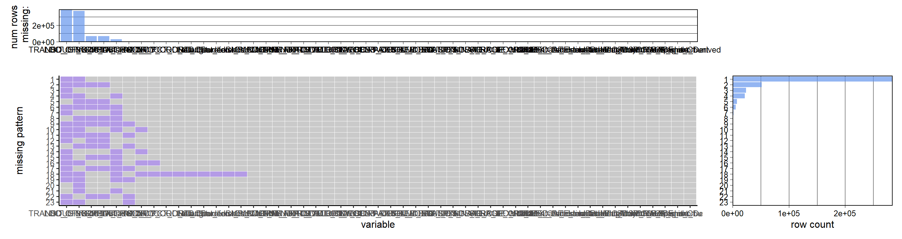
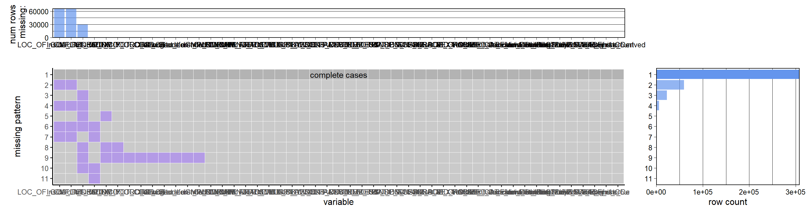
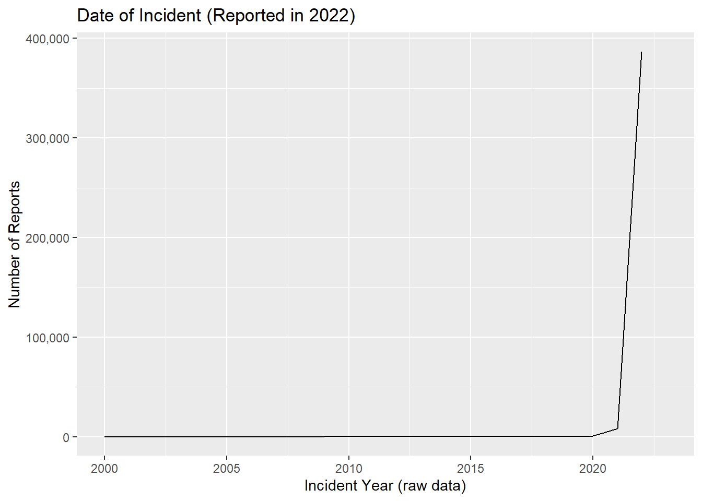

Chapter 6 Data
library(tidyverse)## ── Attaching packages ─────────────────────────────────────── tidyverse 1.3.2 ──
## ✔ ggplot2 3.3.6 ✔ purrr 0.3.4
## ✔ tibble 3.1.8 ✔ dplyr 1.0.10
## ✔ tidyr 1.2.0 ✔ stringr 1.4.1
## ✔ readr 2.1.2 ✔ forcats 0.5.2
## ── Conflicts ────────────────────────────────────────── tidyverse_conflicts() ──
## ✖ dplyr::filter() masks stats::filter()
## ✖ dplyr::lag() masks stats::lag()library(ggplot2)
library(dplyr)
library(lubridate)##
## Attaching package: 'lubridate'
##
## The following objects are masked from 'package:base':
##
## date, intersect, setdiff, unionlibrary(ggridges)
library(geosphere)## Warning: package 'geosphere' was built under R version 4.2.2library(redav) #remotes::install_github("jtr13/redav")
#Unused Libraries:
#library(readr)6.1 Sources
TODO - WRITEUP/repeate proposal
6.1.1 Data Loading
#Group32 - This file has been added to gitignore so it will not be uploaded. So we are on the same page and can run the same code, add the csv to your local project folder in a new subfolder "data".
#df_raw <- read_csv('./data/NYPD_Complaint_Data_Current__Year_To_Date_.csv')
df_raw <- read_csv('./data/NYPD_Complaint_Data_Current__Year_To_Date_.csv'
, col_types= cols(
CMPLNT_NUM = col_character() #was loading as number so numbers with letters were showing as null
)
)
#View(df_raw)
#head(df_raw)6.2 Cleaning / transformation
–TODO 1) Re-categorize and clean Offense Type 2) Derive Date/Time fields 3)
6.2.0.2 Imputing null values
For crime type (Abhi) - There are 5 values with missing “OFNS_DESC”. Since they have valid PD_CD and PD_DESC, we can impute these values from other columns with the same PD_CD two values are for obscenity - 594 PD_CD. categorized as sex crimes one values for crime pos weap - 797 PD_CD. categorized as dangerous weapons one value for “place false bomb” - 648 PD_CD. No other examples of this crime. Ignore? one value for “noise” - 872 PD_CD. No other examples of this crime. Ignore?
df <- df_raw
df$OFNS_DESC[df$CMPLNT_NUM %in% c("248613125", "248290778")] <- "SEX CRIMES"
df$OFNS_DESC[df$CMPLNT_NUM %in% ("246605653")] <- "DANGEROUS WEAPONS"6.2.1 Creating a new column to bucket crimes
df <- df %>%
mutate(CRIME_CAT = case_when(
OFNS_DESC %in% c("RAPE", "SEX CRIMES", "HARRASSMENT 2", "FELONY SEX CRIMES", "PROSTITUTION & RELATED OFFENSES") ~ "SEX CRIMES",
OFNS_DESC %in% c("DANGEROUS DRUGS","CANNABIS RELATED OFFENSES","INTOXICATED & IMPAIRED DRIVING","ALCOHOLIC BEVERAGE CONTROL LAW","INTOXICATED/IMPAIRED DRIVING") ~ "DRUG AND ALCOHOL RELATED",
OFNS_DESC %in% c("ROBBERY","GRAND LARCENY","THEFT-FRAUD","PETIT LARCENY","BURGLARY","GRAND LARCENY OF MOTOR VEHICLE","POSSESSION OF STOLEN PROPERTY","THEFT OF SERVICES","BURGLAR'S TOOLS","PETIT LARCENY OF MOTOR VEHICLE","OTHER OFFENSES RELATED TO THEF") ~ "THEFT OR BURGLARY",
OFNS_DESC %in% c("DANGEROUS WEAPONS","MURDER & NON-NEGL. MANSLAUGHTER","KIDNAPPING & RELATED OFFENSES","HOMICIDE-NEGLIGENT,UNCLASSIFIE","HOMICIDE-NEGLIGENT-VEHICLE","KIDNAPPING","FELONY ASSAULT","ARSON","ASSAULT 3 & RELATED OFFENSES","UNLAWFUL POSS. WEAP. ON SCHOOL","MURDER & NON-NEGL. MANSLAUGHTER") ~ "MAJOR VIOLENT CRIMES",
OFNS_DESC %in% c("CRIMINAL MISCHIEF & RELATED OF","UNAUTHORIZED USE OF A VEHICLE","FRAUDS","OFFENSES AGAINST PUBLIC SAFETY","DISORDERLY CONDUCT","JOSTLING","DISRUPTION OF A RELIGIOUS SERV","ESCAPE 3","OFF. AGNST PUB ORD SENSBLTY &","CRIMINAL TRESPASS","VEHICLE AND TRAFFIC LAWS","GAMBLING","OFFENSES AGAINST THE PERSON","OFFENSES INVOLVING FRAUD","FRAUDULENT ACCOSTING","ANTICIPATORY OFFENSES","LOITERING/GAMBLING (CARDS, DIC") ~ "FRAUD/GAMBLING AND MISC",
OFNS_DESC %in% c("NYS LAWS-UNCLASSIFIED FELONY","MISCELLANEOUS PENAL LAW","FORGERY","OFFENSES AGAINST PUBLIC ADMINI","CHILD ABANDONMENT/NON SUPPORT","NYS LAWS-UNCLASSIFIED VIOLATION","OTHER STATE LAWS","OTHER STATE LAWS (NON PENAL LAW)","NEW YORK CITY HEALTH CODE","ADMINISTRATIVE CODE","OTHER STATE LAWS (NON PENAL LA","AGRICULTURE & MRKTS LAW-UNCLASSIFIED","ENDAN WELFARE INCOMP","OFFENSES RELATED TO CHILDREN") ~"OTHER"))
df$CRIME_CAT[df$CMPLNT_NUM %in% c("243170965", "245874611")] <- "OTHER"
#No Nulls
#View(df[is.na(df$CRIME_CAT),])6.2.2 Date/Time
6.2.2.1 Cleaning null values/ranges
Per the data dictionary, there is both a “from_date” and a “to_date” when the exact time is unknown. There is also a “report date” for when the crime was reported. Using these fields in conjunction, we can derive a new clean field that is the assumed date of the incident. Assumptions: When there is a range, we will use the “from” date only because is populated well and will on average approximate the frequency of crime over time; when from_date is null, we will use the report_date (does not occur often, see Missing Data Analysis below).
df <- df %>%
mutate(
#use from date and report date if null. If to_date then just use from date and we can argue it averages out since new reports will start as other end
Incident_Date_raw = case_when (is.null(CMPLNT_FR_DT) ~ RPT_DT
,CMPLNT_FR_DT == "(null)" ~ RPT_DT
,TRUE ~ CMPLNT_FR_DT
)
#flag if estimated (ie from date is null or to date is populated)
,Incident_Date_Estimated_Flag = case_when ( is.null(CMPLNT_FR_DT) ~ 'Y'
,CMPLNT_FR_DT == "(null)" ~ 'Y'
,!is.null(CMPLNT_TO_DT) ~ 'Y'
,CMPLNT_TO_DT != "(null)" ~ 'Y'
,TRUE ~ 'N'
)
)
#Convert to times
df <- df %>%
mutate(
#creating date and time together for lubridate
Incident_Date = as.Date(Incident_Date_raw, format = '%m/%d/%Y')
,Incident_Datetime = as.POSIXct(paste(Incident_Date_raw,CMPLNT_FR_TM), format = '%m/%d/%Y %H:%M:%S')
) %>%
mutate(
Incident_HourTime = hour(Incident_Datetime) + minute(Incident_Datetime)/60
,Incident_Month = month(Incident_Date)
,Incident_DayOfWeek = wday(Incident_Date, label = TRUE, abbr = TRUE)
)6.2.3 GeoLocation Fields
#add column for Columbia location
CU_Latitude = 40.807384
CU_Longitude = -73.963036
#df_test = df[1:10,]
#df_test$dist_to_CU <- apply(df_test, 1, function(x)distm(c(x[which( colnames(df)=="Longitude")],x[which(colnames(df)=="Latitude")]),c(x[which( colnames(df)=="CU_Longitude")],x[which( colnames(df)=="CU_Latitude")]),fun = distGeo))
df$dist_to_CU <- apply(df, 1, function(x)distm(
c(x[which( colnames(df)=="Longitude")],x[which(colnames(df)=="Latitude")])
,c(CU_Longitude,CU_Latitude)
,fun = distGeo)
)–#TODO can we speed this up? Takes about 5 mins to run
6.2.4 Other Derivations
Here we will add additional fields for more classification –#TODO add more description
df$LOC_OF_OCCUR_DESC[df$LOC_OF_OCCUR_DESC=="(null)"]<-NA
df <- df %>%
mutate(
#get a flag for outside vs inside
Inside_Outside = case_when (
LOC_OF_OCCUR_DESC %in% c("FRONT OF" , "OPPOSITE OF" , "REAR OF") ~ "OUTSIDE"
,LOC_OF_OCCUR_DESC %in% c("INSIDE") ~ "INSIDE"
#,LOC_OF_OCCUR_DESC == "(null)" ~ NULL #TODO -cant figure this out error
,TRUE ~ LOC_OF_OCCUR_DESC
)
#if victim was a person (not a business/govt)
,VIC_Individual_Flag = case_when (
VIC_SEX %in% c("M","F","L") ~ 'Y'
,TRUE ~ 'N'
)
) %>%
mutate(
Complaint_Count = 1 #maybe want to add like a intensity value or something?
#TODO, make this field a little better/check values?
,Premise_Derived = case_when (
Inside_Outside == 'INSIDE' ~ 'INSIDE'
,PREM_TYP_DESC =="RESIDENCE - APT. HOUSE" & (Inside_Outside == "(null)" | is.null(Inside_Outside)) ~ 'INSIDE'
,!is.null(PARKS_NM) & PARKS_NM != "(null)" ~ 'PARK'
,PREM_TYP_DESC %in% c("TRANSIT - NYC SUBWAY","BUS (NYC TRANSIT)","TRANSIT FACILITY (OTHER)") ~ 'SUBWAY'
,TRUE ~ 'STREET'
)
)6.2.5 Filter Table for Relevance
–#TODO add more description Date - We only have crimes that took place (as defined by derived field above) in 1/1/2022 onward (this should remove 5%) (Devan) Crime Type - Use the derived field from above Location? - Tentative, only look within 3.2km of Columbia (per derived field above)
df_filter <- df %>% filter( Incident_Date >= as.Date('2022/01/01') ) %>%
filter (
!CRIME_CAT %in% c("OTHER")
)
#TODO- distance filter?
#View(df_filter)
#unique(df_filter$CRIME_CAT)This improves the results as we will show in the chapter. There are not many records that are excluded (396978 - 364298)
6.2.6 Select and Rename Columns in a Usuable Table
–#TODO add more description
#Not required
df_key_fields <- df_filter %>%
select(
#Basic Info
CMPLNT_NUM
#,CRM_ATPT_CPTD_CD
#,Complaint_Count #derived
#Date Info
,Incident_Date_raw #derived
#,Incident_Date_Estimated_Flag #derived
#,Incident_Date #derived
#,Incident_Datetime #derived
#,Incident_HourTime #derived
#,Incident_Month #derived
#,Incident_DayOfWeek #derived
,CMPLNT_FR_DT
,CMPLNT_FR_TM
#,CMPLNT_TO_DT
#,CMPLNT_TO_TM
,RPT_DT
#Location Info
#,Inside_Outside #derived #missing a lot (because derived on field below)
#,CU_Latitude #derived
#,CU_Longitude #derived
,dist_to_CU #derived
,Premise_Derived #derived
#,ADDR_PCT_CD
,BORO_NM
#,HADEVELOPT
#,HOUSING_PSA
#,JURISDICTION_CODE
,JURIS_DESC
#,LOC_OF_OCCUR_DESC #missing a lot (because of privacy)
#,PARKS_NM
#,PATROL_BORO
#,PD_CD
#,PD_DESC
#,PREM_TYP_DESC
#,STATION_NAME
#,TRANSIT_DISTRICT
#,X_COORD_CD
#,Y_COORD_CD
#,Latitude
#,Longitude
,Lat_Lon
#,`New Georeferenced Column`
#Crime Info
,CRIME_CAT #derived
#,VIC_Individual_Flag #derived
#,KY_CD
,LAW_CAT_CD
,OFNS_DESC
,SUSP_AGE_GROUP
,SUSP_RACE
,SUSP_SEX
,VIC_AGE_GROUP
,VIC_RACE
,VIC_SEX
)6.3 Missing value analysis
First we can look at the raw data to see what things look like.
plot_missing(df, percent = FALSE)
#View(df[!is.na(df$TRANSIT_DISTRICT),])
plot_missing( df[ , !colnames(df) %in% c("TRANSIT_DISTRICT","HOUSING_PSA") ] , percent = FALSE) These charts are hard to read given the number of columns but it shows that most data is actually populated very well. There are two problem fields causing all of nulls but we can regraph this without those and see that complete cases are at the top. However, this is still not accurate because there are string values in the data that say “(null)” which would appear as populated. In any case, we do not need to clean and evaluate all columns, so let us work off of the new, filtered dataset (see below). Side Note: We initially noticed the Complaint_Num was null often but this was due to containing alphanumeric characters but readr loaded it as a number only
plot_missing(df_key_fields, percent = FALSE)
#View(df_key_fields[is.na(df_key_fields$CMPLNT_NUM),])The filtered data (relevant columns and rows only) is populated very well and this dataset accounts for improperly coded values where “(null)” will appear as NULL properly. We see there are a few blanks for lat/long and thus the related derived field, but otherwise we have a good dataframe to use.